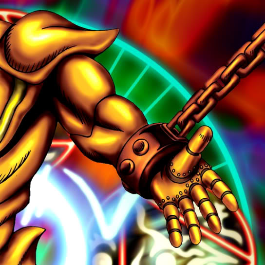

Left Arm of the Forbidden One

Description: "Awards victory to the one who brings together all four limbs and unleashes the monster."
STATS
ATK: 200
DEF: 300DECK COST
Deck Cost per Card: 10EFFECT NOT IMPLEMENTED
Fusion List (10 Possible Fusions)
- Left Arm of the Forbidden One + Ancient Jar = Ushi Oni
- Left Arm of the Forbidden One + Baby Dragon = Blackland Fire Dragon
- Left Arm of the Forbidden One + Blocker = Disk Magician
- Left Arm of the Forbidden One + Blue-Eyed Silver Zombie = Magical Ghost
- Left Arm of the Forbidden One + Celtic Guardian = Dark Elf
- Left Arm of the Forbidden One + Dancing Elf = Dark Elf
- Left Arm of the Forbidden One + Fire Reaper = Magical Ghost
- Left Arm of the Forbidden One + Mech Mole Zombie = Magical Ghost
- Left Arm of the Forbidden One + Skull Servant = Magical Ghost
- Left Arm of the Forbidden One + The 13th Grave = Magical Ghost